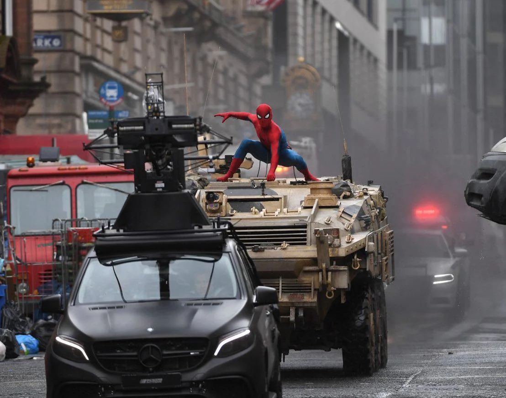
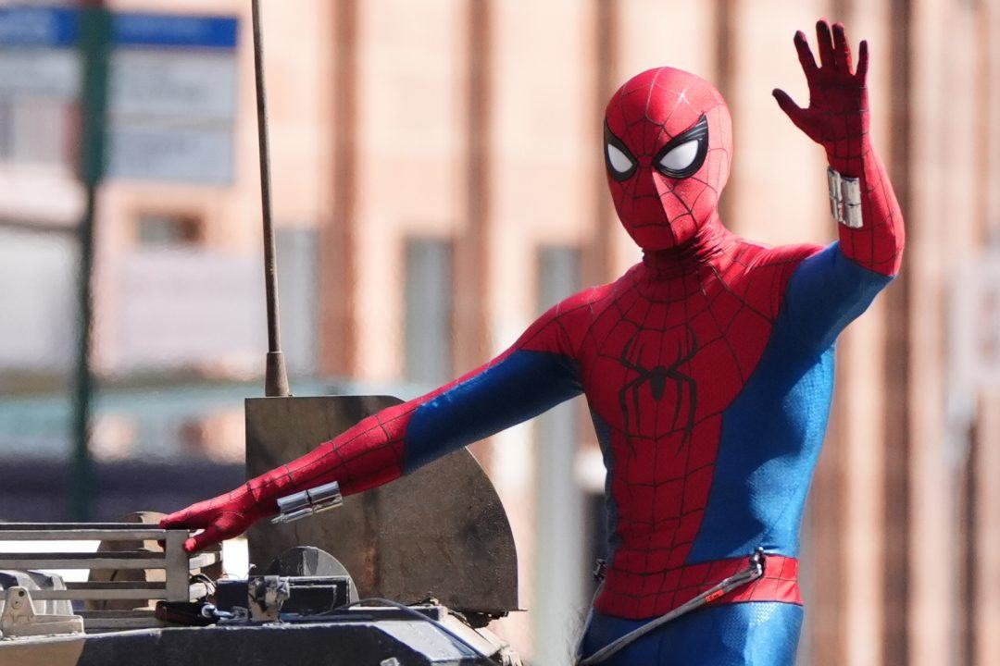
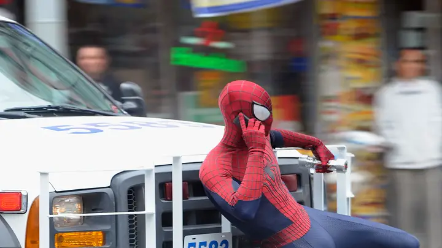

312
Avistamentos registrados
41
Vilões derrotados
4.800+
Membros investigadores
// Banco de Dados
Cronologia de avistamentos
| Data | Local | Ocorrência | Duração | Dano Colateral | Fonte | Classificação |
|---|---|---|---|---|---|---|
| Fev 2025 | Midtown, Manhattan | Primeiro avistamento confirmado. Figura encarnada vista saltando entre edifícios às 22h. | ~8 min | Nenhum | Vídeo anônimo | Histórico |
| Jul 2025 | Queens, Jamaica Ave | Parou assalto a banco. Imobilizou 3 suspeitos com teia. Saiu antes da polícia. | ~4 min | Baixo | Câmera de segurança | Confirmado |
| Jul 2025 | Brooklyn Bridge | Salvou 6 pessoas após acidente com caminhão na ponte. Teia usada para estabilizar veículo. | ~22 min | Nenhum | Reportagem NY Post | Confirmado |
| Ago 2025 | Upper East Side | Confronto com O Abutre. Batalha aérea entre arranha-céus. Maior dano estrutural registrado. | ~35 min | Alto | Múltiplas câmeras | Incidente Maior |
| Out 2025 | Aeroporto JFK | Participou do Incidente Leipzig ao lado de outras figuras mascaradas não identificadas. | +1 hora | Moderado | Satélite / Relatos | Incidente Maior |
| Nov 2025 | Times Square | Salvou lotação de metrô de colapso de infraestrutura. Carregou 14 pessoas pela teia. | ~15 min | Baixo | Dezenas de celulares | Confirmado |
| Abr 2026 | Midtown / Newark | Confronto com Electro e Sandman. Teia de energia vs. teia orgânica. Desfecho inconclusivo. | +2 horas | Muito Alto | Imprensa local | Incidente Maior |
| Mai 2026 | Queens, Elmhurst | Avistamento diurno. Visto sendo carregado por um carro da policia, realizando uma ligação. | ~3 min | Nenhum | Morador local | Investigando |
| Mai 2026 | Columbia University | Visto próximo ao campus. Parou briga de gangue. Falou brevemente com bystander. | ~6 min | Nenhum | Estudante anônimo | Novo Lead |
| Jun 2026 | Brooklyn, Williamsburg | Mais recente avistamento confirmado. Visto em cima de um carro militar, perseguindo um veiculo preto e armado. | ~2 min | Nenhum | Câmera de tráfego | Novo Lead |
// Banco de Imagens
Últimos avistamentos


